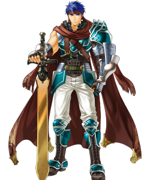
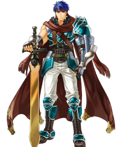

Fire Emblem doesn't have a happy story with its creator, as he left Nintendo to make a new game similar to Fire Emblem but with a different company but Nintendo sued them and won since the game was similar in titles and gameplay. Fire Emblem however is still growing as a series (even as far as to becoming a featured game) and has new fans every game so the series going away won't be a problem. An in-depth history that goes along for two hours will be linked down below since it's too long to put here. Lords featured are Eirika, Ephraim, and Ike (up to down). Click to watch the video here!
 
7) Eirika is from the kingdom of Renais and is twin to Prince Ephraim (below). Their story is that a neighbouring kingdom which were good allies suddenly turned on them and attacked all kingdoms around for no reason, so they have to fight back and figure out what's going on, as one of their dear friends is the prince of the hostile kingdom. Eirika was in the capital as the kingdom besieged them.
8) As previously stated, Ephraim is brother to Princess Eirika, however he was in the enemy's territory as the opposing kingdom was invading. He was short on supplies, only had four men, of which one was injured, and managed to take a fort full of enemies with three people. Both appear in one game, Fire Emblem The Sacred Stones and FEH.
9) Ike is part of his father's mercenary group, The Greil Mercenaries. One day in the night, he sees his father get killed by an armoured man and vows to kill the armoured man. He takes control of the mercenary group and goes fighting wars and battles he doesn't need to participate in, but does so anyways to become stronger. He appears in two main games, Fire Emblem Path of Radiance and Fire Emblem Radiant Dawn, as well as FEH.